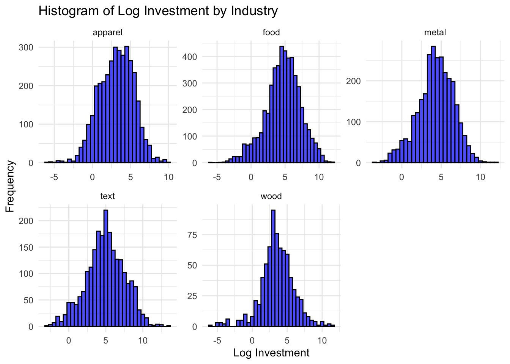
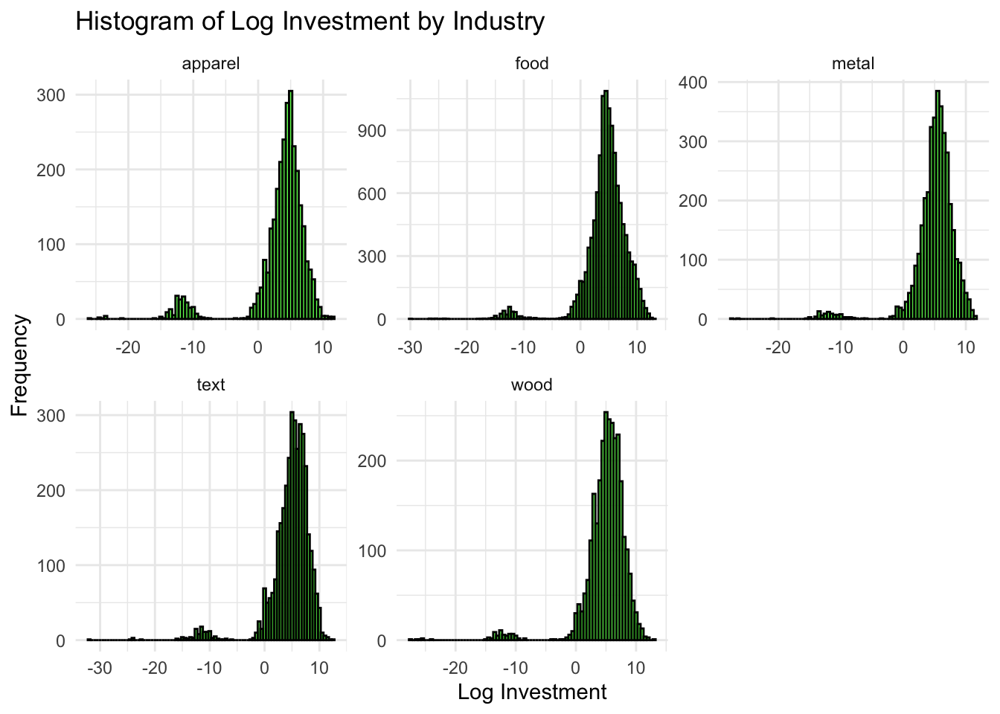
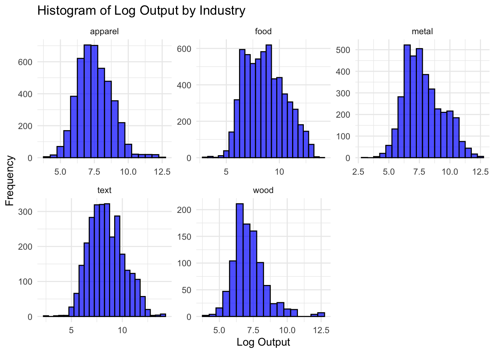
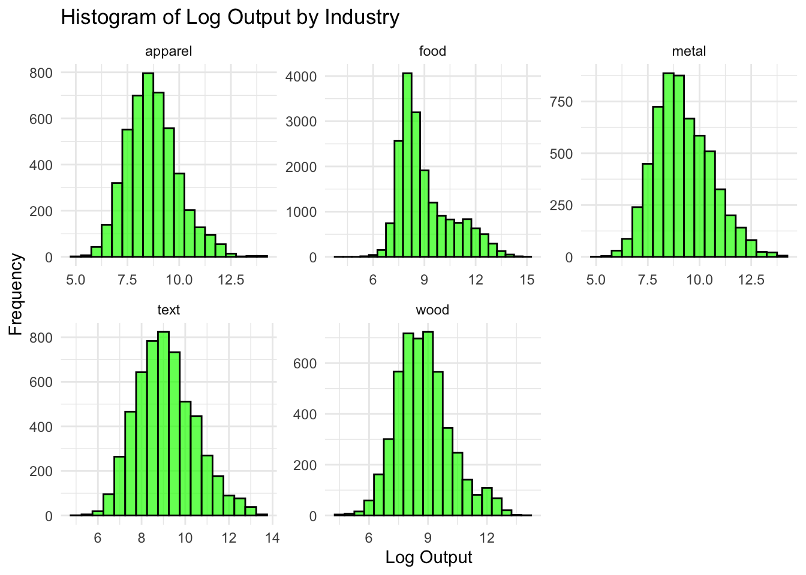
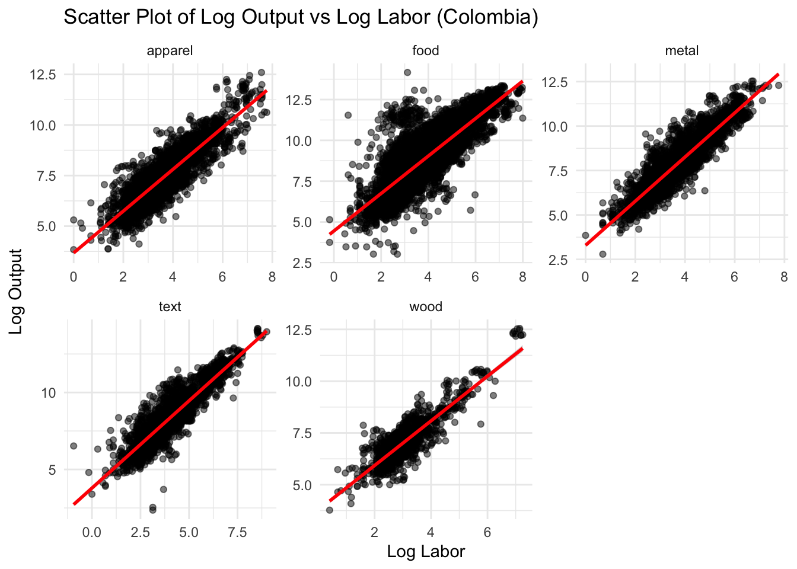

The following objects are masked from 'package:stats':
filter, lag
The following objects are masked from 'package:base':
intersect, setdiff, setequal, union
library(ggplot2)library(readr)library(lubridate)
Attaching package: 'lubridate'
The following objects are masked from 'package:base':
date, intersect, setdiff, union
library(here)
here() starts at /Users/tate/SchoolWork
# Load the datasetdata <-read_csv(here("Y2S1/IO/ps2/data", "prod_data_all.csv"))
Rows: 57748 Columns: 9
── Column specification ────────────────────────────────────────────────────────
Delimiter: ","
chr (2): industry, country
dbl (7): id, year, Y, Y2, L, K, M
ℹ Use `spec()` to retrieve the full column specification for this data.
ℹ Specify the column types or set `show_col_types = FALSE` to quiet this message.
# Clean dataset to harmonize year discrepancy - 1981 = 81data <- data %>%mutate(year =ifelse(year <100, year +1900, year))# Display the first few rows of the datasethead(data)
# A tibble: 6 × 9
id year Y Y2 L K M industry country
<dbl> <dbl> <dbl> <dbl> <dbl> <dbl> <dbl> <chr> <chr>
1 10250 1981 296. 113. 2.86 15.5 183. metal col
2 10732 1989 4733. 2566. 86.2 470. 2167. metal col
3 10732 1990 4800. 2608. 73.6 644. 2192. metal col
4 10962 1982 7090. 1836. 37.9 5538. 5254. metal col
5 10962 1983 4942. 1343. 40.5 6314. 3599. metal col
6 11192 1981 1813. 1311. 24.0 1723. 502. metal col
1.1
# Summary Statistics of the datadata %>%group_by(country, industry) %>%summarize(total_obs_sect =n_distinct(id),.groups ='drop' ) %>%ungroup() %>%arrange(country, industry)
# A tibble: 10 × 3
country industry total_obs_sect
<chr> <chr> <int>
1 chile apparel 856
2 chile food 2584
3 chile metal 1038
4 chile text 836
5 chile wood 867
6 col apparel 744
7 col food 908
8 col metal 632
9 col text 475
10 col wood 173
Apparel Over Time - 1979: 354 \(\rightarrow\) 1996: 292 - Peak at 1981 - 979
Food Over Time - 1979: 1171 \(\rightarrow\) 1996: 1178 - Peak at 1981 - 1951
Metal Over Time - 1979: 373 \(\rightarrow\) 1996: 443 - Peak at 1981 - 890
Textiles Over Time - 1979: 391 \(\rightarrow\) 1996: 304 - Peak at 1981 - 752
Wood Over Time - 1979: 340 \(\rightarrow\) 1996: 290 - Peak at 1981 - 465
1.2
# Creation of Investment Variable with 10 per depreciation ratedata <- data %>%group_by(id) %>%mutate(dep = .1,k_next =lead(K, 1),i = k_next - ((1- dep) * K) ) %>%group_by(industry) %>%mutate(log_i =log(i) ) %>%ungroup()
Warning: There were 5 warnings in `mutate()`.
The first warning was:
ℹ In argument: `log_i = log(i)`.
ℹ In group 1: `industry = "apparel"`.
Caused by warning in `log()`:
! NaNs produced
ℹ Run `dplyr::last_dplyr_warnings()` to see the 4 remaining warnings.
data_col <- data %>%filter(country =="col")data_chi <- data %>%filter(country =="chile")# Visualize with Histogram for each industryggplot(data_col, aes(x = log_i)) +geom_histogram(binwidth =0.5, fill ="blue", color ="black", alpha =0.7) +facet_wrap(~ industry, scales ="free") +labs(title ="Histogram of Log Investment by Industry",x ="Log Investment",y ="Frequency") +theme_minimal()
Warning: Removed 3659 rows containing non-finite outside the scale range
(`stat_bin()`).

ggplot(data_chi, aes(x = log_i)) +geom_histogram(binwidth =0.5, fill ="green", color ="black", alpha =0.7) +facet_wrap(~ industry, scales ="free") +labs(title ="Histogram of Log Investment by Industry",x ="Log Investment",y ="Frequency") +theme_minimal()
Warning: Removed 14540 rows containing non-finite outside the scale range
(`stat_bin()`).

From these graphs, it seems that most industries have similar levels of investment, though textiles, wood, and metal appear to have slightly higher investment levels on average, while apparel is lower.
1.3
data_col <- data_col %>%group_by(industry) %>%mutate(log_Y =log(Y), ) %>%ungroup()data_chi <- data_chi %>%group_by(industry) %>%mutate(log_Y =log(Y), ) %>%ungroup()# Visualize with Histogram for each industryggplot(data_col, aes(x = log_Y)) +geom_histogram(binwidth =0.5, fill ="blue", color ="black", alpha =0.7) +facet_wrap(~ industry, scales ="free") +labs(title ="Histogram of Log Output by Industry",x ="Log Output",y ="Frequency") +theme_minimal()

ggplot(data_chi, aes(x = log_Y)) +geom_histogram(binwidth =0.5, fill ="green", color ="black", alpha =0.7) +facet_wrap(~ industry, scales ="free") +labs(title ="Histogram of Log Output by Industry",x ="Log Output",y ="Frequency") +theme_minimal()

1.4
# Scatter plot of log_Y and log_L for each sector in each country --> add line of best fitdata_col <- data_col %>%group_by(industry) %>%mutate(log_L =log(L), ) %>%ungroup()data_chi <- data_chi %>%group_by(industry) %>%mutate(log_L =log(L), ) %>%ungroup()ggplot(data_col, aes(x = log_L, y = log_Y)) +geom_point(alpha =0.5) +geom_smooth(method ="lm", color ="red") +facet_wrap(~ industry, scales ="free") +labs(title ="Scatter Plot of Log Output vs Log Labor (Colombia)",x ="Log Labor",y ="Log Output") +theme_minimal()
`geom_smooth()` using formula = 'y ~ x'

ggplot(data_chi, aes(x = log_L, y = log_Y)) +geom_point(alpha =0.5) +geom_smooth(method ="lm", color ="red") +facet_wrap(~ industry, scales ="free") +labs(title ="Scatter Plot of Log Output vs Log Labor (Chile)",x ="Log Labor",y ="Log Output") +theme_minimal()